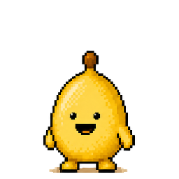

write on the phone, or photograph a paper page and we turn the handwriting into text you can search. the photo stays. a pixel banana keeps count of the days, and if you stay away too long it goes bananas. if you set it up, one friend hears that you stopped, and they have to say yes first.
app storesoongoogle playsoon
the first two weeks are free. after that it's $49.99 a year or $9.99 a month, and apple and google show the price in your currency. the mac and windows banana is included.
three ways in
rogue
write, or a friend hears.
the banana keeps count. if you go quiet, one friend you picked hears that and nothing else, and never a word of what you wrote.
photograph the notebook and the handwriting becomes text you can search. the photo stays as you took it, you can edit the typed up text, and typing it in the cloud asks you first.
journal school
there are six short lessons in the app, under you, then journal school. a page is allowed to be ordinary.
what a journal is
a diary, a log, and a hard page are different.
how to start
get something on the page.
keep the day
so you can read it later.
when something is stuck
write it, then stop.
make a plan
the wish, the snag, the next step.
pick today's page
match the page to the day.
how it works
one
write anything
two minutes is enough. or photograph a paper page, and the handwriting becomes text you can search while the photo stays in your vault.
two
the banana keeps count
the banana changes with the days since your last save, from home to out the door. a widget shows it with one line, and there are no streaks, badges or red dots.
three
the circle
pick up to five friends, and they have to say yes first. first message after five quiet days, then every four days, at most three per silence, stops the moment they write.
you wrotehomegood, you wrote today.
a quiet daywaitingno rush.

a few quiet daysgetting ideasi've been talking to the fridge.
a bit longerpackingmy bag is packed and this is going to be fun.
five quiet daysoutned sent a postcard from lisbon. nobody knows why.
you wrote againbacki came back. don't make it a thing.
five quiet days, and ned has left.
the peel stays, and so does the door. write once and it comes back.
skriblio bananawhatsapp
hi maya. this is sam's banana. sam has not written in 5 days. you could ask how they are. reply mute to stop these.
that's the whole message. there's no entry, no mood, and no count beyond the days.
what the friend gets
the friend message isn't live yet. the wording and the yes page are ready, and until the number is live nothing goes out on its own.
gets
one plain message on whatsapp after five quiet days, the one above, with your names in it.
at most two more, four days apart, and then the banana stays out and says nothing.
one line when you're back: sam wrote, so i'm home. thank you.
there's always a way out. if they reply mute it stops, if you remove them it stops, and if you pause the friend messages it waits a month.
doesn't get
a word of what you wrote, because the banana only knows dates.
a mood, a rating, a title, a photo.
the app, which friends never need.
anything at all before they said yes on a page that shows the exact words, and keeps them.
a banana for your desk
it's a small one in the corner of your screen, and it does nothing most of the day. once or twice, if you haven't written, it slides in with one line. click write and a cream page opens on the computer, and save puts it in the same vault as the phone.
mac comes first and windows after, and it's in both plans.
i've been talking to the fridge.write
yours
face id lockit's one switch under you, and it starts off.
ios data protectionit's on the phone, with private storage on the server.
export any timetext, a pdf, or a zip with every photo as you took it.
delete any timeit takes two taps, and it deletes the photos first, then every row that was yours.
friends get a plain lineand never the words.
pick your banana
there are ten of them and one is yours. you can change later, unless a friend has just been told.
coathands in the peel
dalesquare glasses, blank
sitprefers the floor
huskhalf out already
bricka plantain, and not cute
postcarries the mail bag
moethe monk
nedround, and has had enough
shushthe librarian
kitlying down, on purpose
the first two weeks are free.
the first two weeks are free. after that it's $49.99 a year or $9.99 a month, and apple and google show the price in your currency. your journal exports in one tap with or without a plan, and there's no card until you pick one.
a year
$49.99
the banana, the vault and the desk, billed once a year.
a month
$9.99
the same app, billed each month.
app storesoongoogle playsoon
questions
how do i cancel
apple or google handle the subscription, so cancelling happens there. on iphone go to settings, your name, subscriptions, skriblio. on android go to the play store, your profile, payments and subscriptions. you keep access until the period ends.
can i get my journal out
yes, you can. go to you, then export data. you get one text file, a pdf to print, or a zip with your original photos and the care log, with or without a plan.
what do my friends see
they see that you haven't written for a few days, and later that you have. they never see a word of what you wrote, or a mood or a rating. the exact messages are on this page. nothing goes out on its own until the number is live.
what does it cost
the first two weeks are free. after that it's $49.99 a year or $9.99 a month, and apple and google show the price in your currency. the mac and windows banana is in both plans.
is this therapy
no, it isn't. journal school is an optional library of short techniques. it isn't treatment, and we don't claim it is.


 a quiet daywaitingno rush.
a quiet daywaitingno rush. a bit longerpackingmy bag is packed and this is going to be fun.
a bit longerpackingmy bag is packed and this is going to be fun.
 dalesquare glasses, blank
dalesquare glasses, blank sitprefers the floor
sitprefers the floor huskhalf out already
huskhalf out already bricka plantain, and not cute
bricka plantain, and not cute postcarries the mail bag
postcarries the mail bag moethe monk
moethe monk shushthe librarian
shushthe librarian kitlying down, on purpose
kitlying down, on purpose